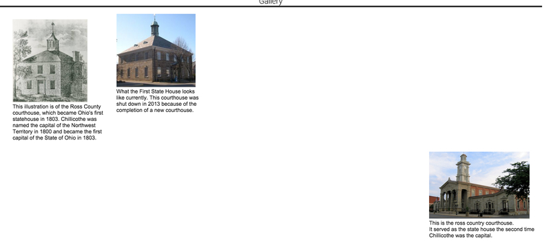
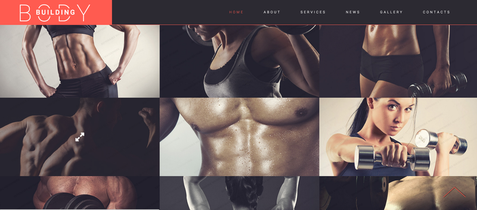

This blog is in concurrence with my course that I am currently in with Full Sail University. Throughout the
month of November, I will be completing different goals that I have set forth for myself.
Thank you and Enjoy!
Week One: What I Would Like to Work On
Floats

I have had trouble with floats since I started with Design for Web Standards 1. I am getting better with them
but most of the time they end up being pushed down or overlap another element. This class will help me with
learning how to get a better handle on my floats. This is something that is definitely needed within the Web
Design and Development career. I will post my progress as updates come available with screen shots.
How I plan to accomplish this:
I plan to accomplish this by working with my css better. Below is an example of one of my messed up floats.

The way I plan on fixing that is to work on my clear tags and knowing which way to float them.
for instance:
Here is a float tag from www.w3schools.com

Gallery

While I can use frameworks to get a gallery of photots, I want to better my skills at setting
them up without having to use the framework. I want to know the code by heart or at least have
it saved in a folder somewhere to reference it when I want to use this function. I will post my
progress as updates come available with screen shots.
Animation

I know what you're thinking. "Randall, this is javaScript based!" I know, but I still have to
know the HTML and CSS behind it to actually make it function.I will post my progress as updates
come available with screen shots.
Orbiters

You're probably thinking "What is it with javaScript and this guy?" Well, although this may be
mostly JS based, I still have to know the CSS and HTML behind it to amke it work. Just like I
said with the animation entry, I want to be able to recall it from memory or a file. I will post
my progress as updates come available with screen shots.
Dropdown Menus

Finally for this week, the last thing I want to better is Drop Down Menus. They can look
AWESOME when done correctly. Some that I have done looks like someone in middle school
created them. I want to better my skills with them. Every website needs navigation so without it you
aren't going to get anywhere. I will post my progress as updates come available with screen shots.